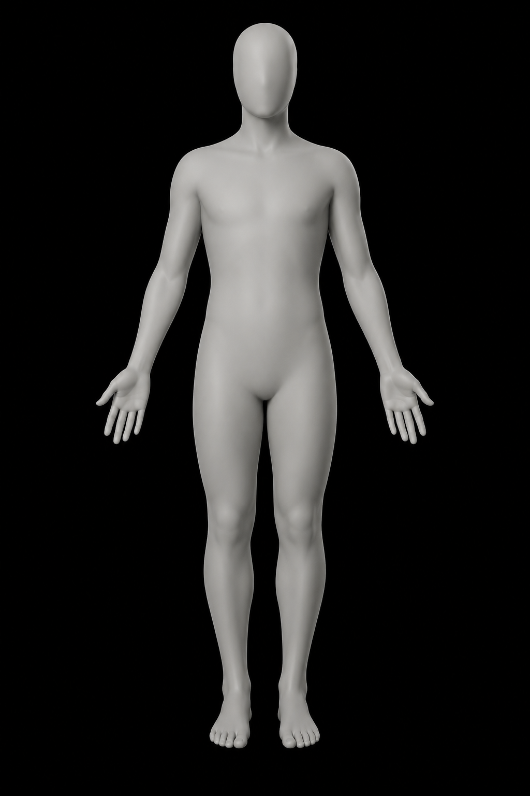
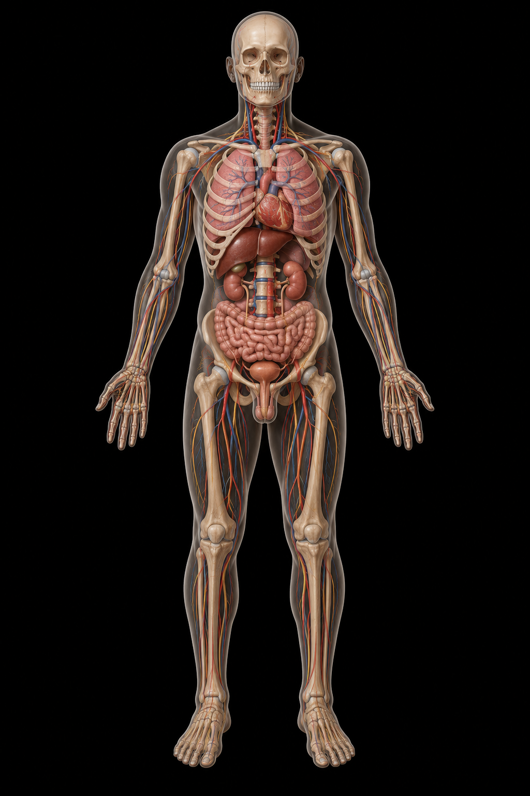
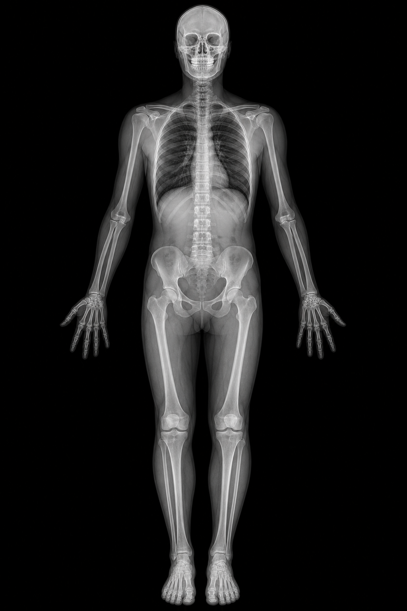
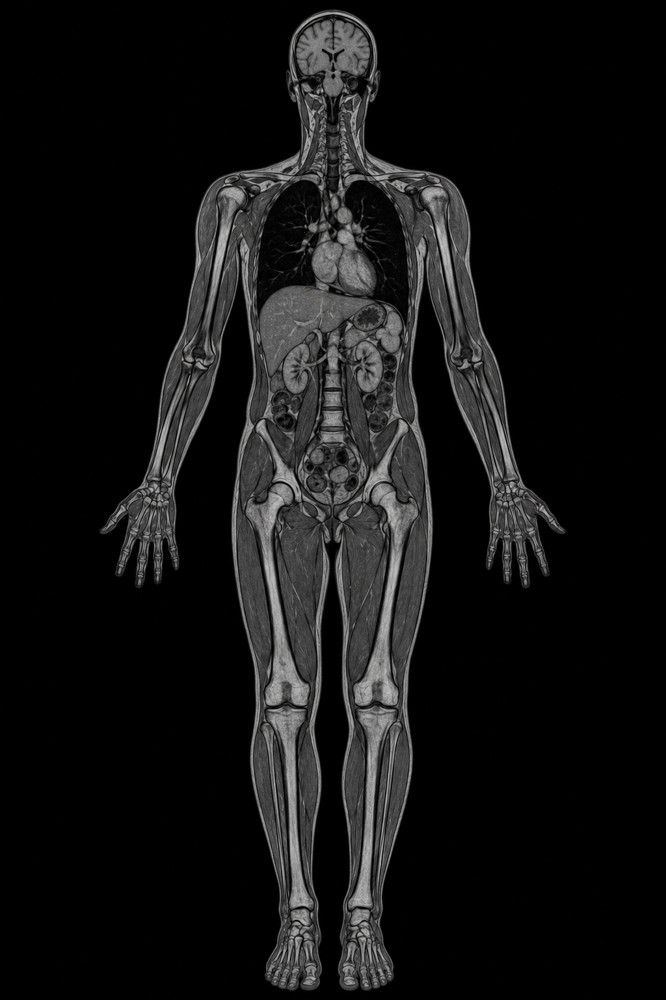
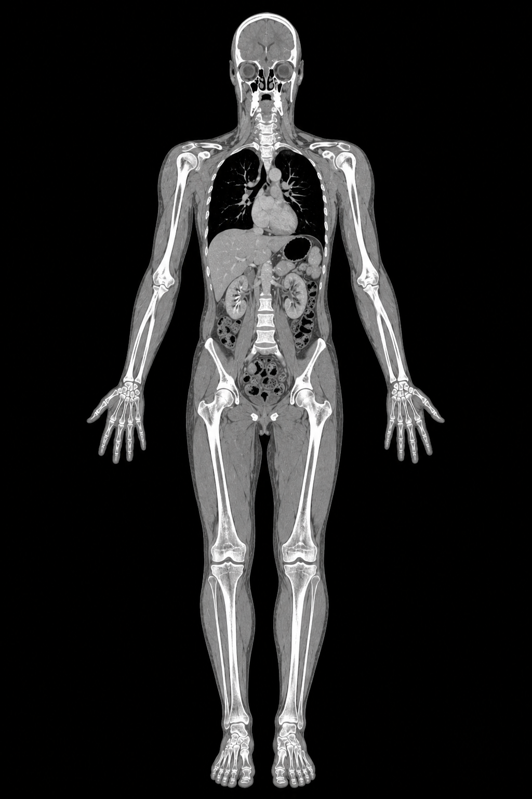

Radiologic Anatomy · Reimagined
See inside.
Every way.
مرّر العدسة لتكشف تشريح الجسم، وبدّل المودالتي لترى البنية نفسها بالتشريح أو الأشعة أو الرنين أو المقطعية. أطلس ثلاثي اللغة مبني على RadLex · RSNA · TA2 · LOINC — الأول من نوعه في الوطن العربي.
8
مودالتي
250+
مصطلح تشريحي
3-lang
عربي·إنجليزي·لاتيني





مرّر العدسة لتكشف الداخل + بدّل المودالتي
The platform
كل ما يحتاجه فهم التشريح الإشعاعي
Atlas
أطلس متعدّد المودالتي
كل بنية عبر ٨ مودالتي بأدوات نافذة/مستوى احترافية وعارض سلاسل.
Dictionary
قاموس Rosetta ثلاثي اللغة
عربي · إنجليزي · لاتيني — مرتبط بـTA2 و RadLex و LOINC ككوكبة تفاعلية.
RadCompare
مقارنة جنباً لجنب
قارن المودالتي والحالات على لوحة عمل بأسلوب PACS.
Learn
تعلّم بالتكرار المتباعد
مختصرات · تحدٍّ يومي · حالات سريرية وفق ACR.
RadLex®·RSNA·ACR APPROPRIATENESS·ESR iGuide·TA2·DICOM PS3.x·LOINC 2.82·WHO UMD·
RadLex®·RSNA·ACR APPROPRIATENESS·ESR iGuide·TA2·DICOM PS3.x·LOINC 2.82·WHO UMD·